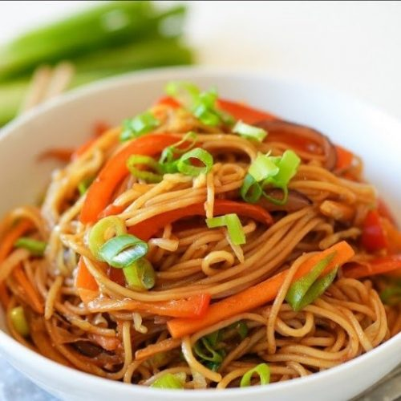
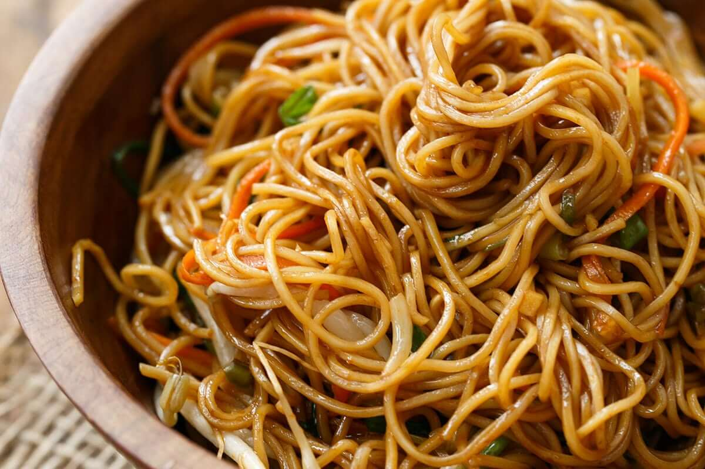

Image Preview


Recipe Details
- Prep Time: 10 minutes
- Cook Time: 25 minutes
- servings: 4 people
- Difficulty Easy
Ingredients
- Spaghetti
- Tomato paste
- Onions
- Vegetable oil
- Seasoning cubes
- Salt
- Pepper
Instructions
- Boil the spaghetti in salted water until soft.
- Heat oil in a pan and sauté chopped onions.
- Add tomato paste and fry for a few minutes.
- Pour in water, add seasoning, salt, and pepper.
- Add the cooked spaghetti and mix well.
- Cook for another 5 minutes and serve hot.
Tips
- Use a good quality tomato paste for the best flavor.
- Adjust the amount of seasoning based on your taste preferences.
-
Serve with grated cheese or a dollop of sour cream for extra richness.
For extra flavor, you can add vegetables or fried chicken to your
spaghetti.
Nutrition Facts
This dish provides carbohydrates for energy and essential nutrients from
tomatoes and spices.